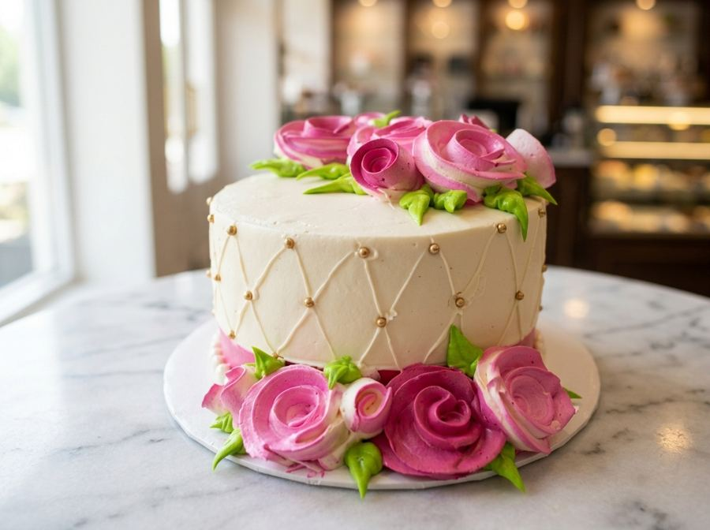

Ups, nos salimos del camino
Esta página no está en el menú.
Puede que el enlace haya cambiado o que la dirección esté escrita de otra manera. No te preocupes: todavía hay muchas cosas ricas por descubrir en Kenia.

Ups, nos salimos del camino
Puede que el enlace haya cambiado o que la dirección esté escrita de otra manera. No te preocupes: todavía hay muchas cosas ricas por descubrir en Kenia.
